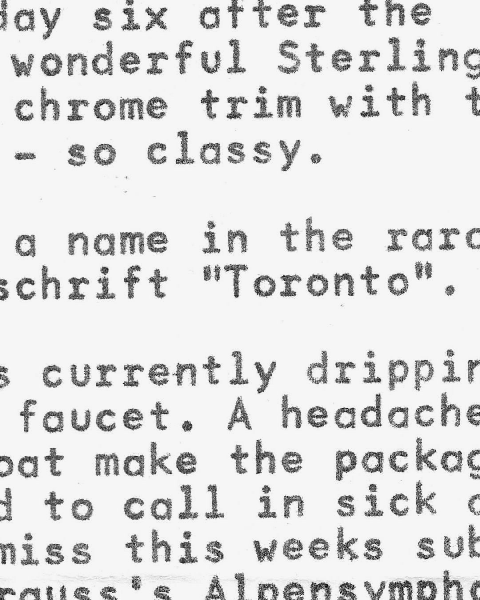
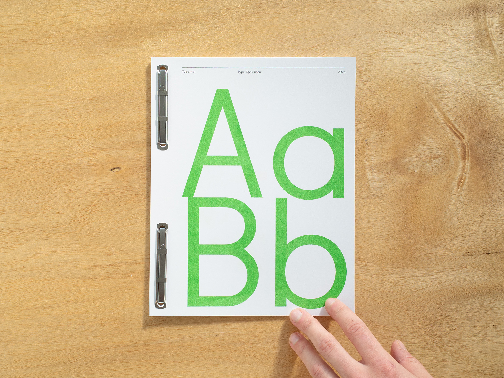
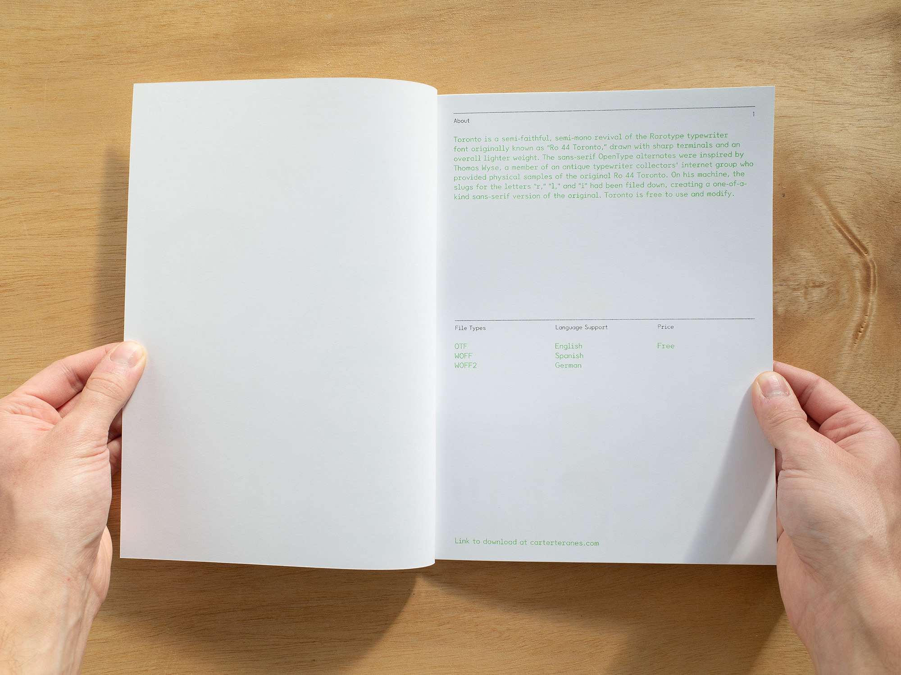
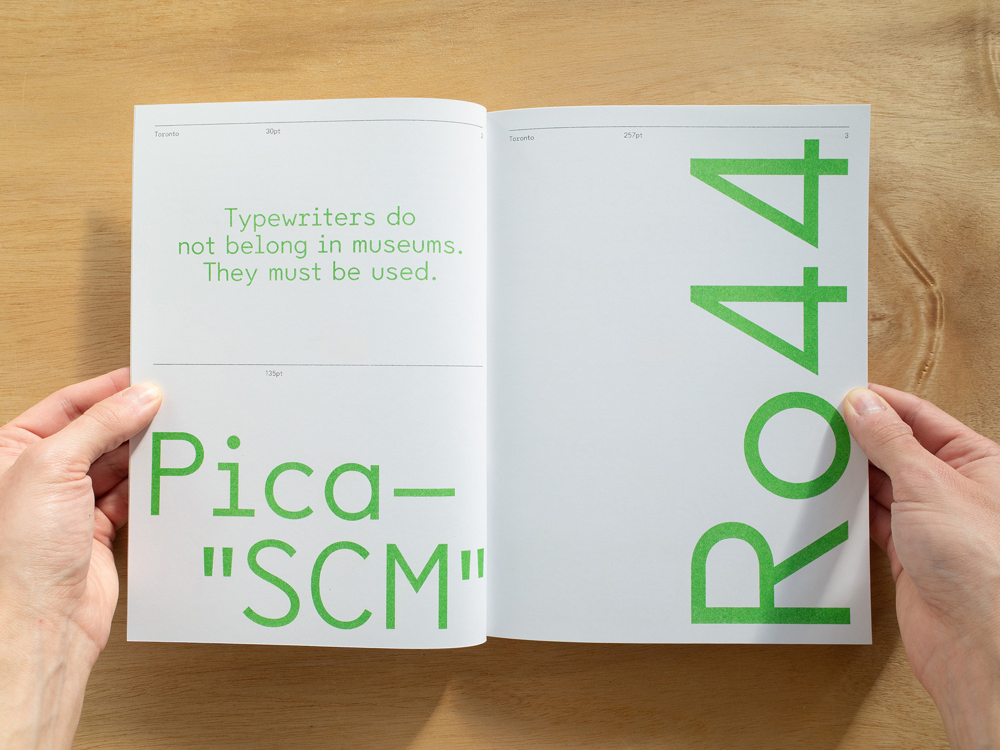
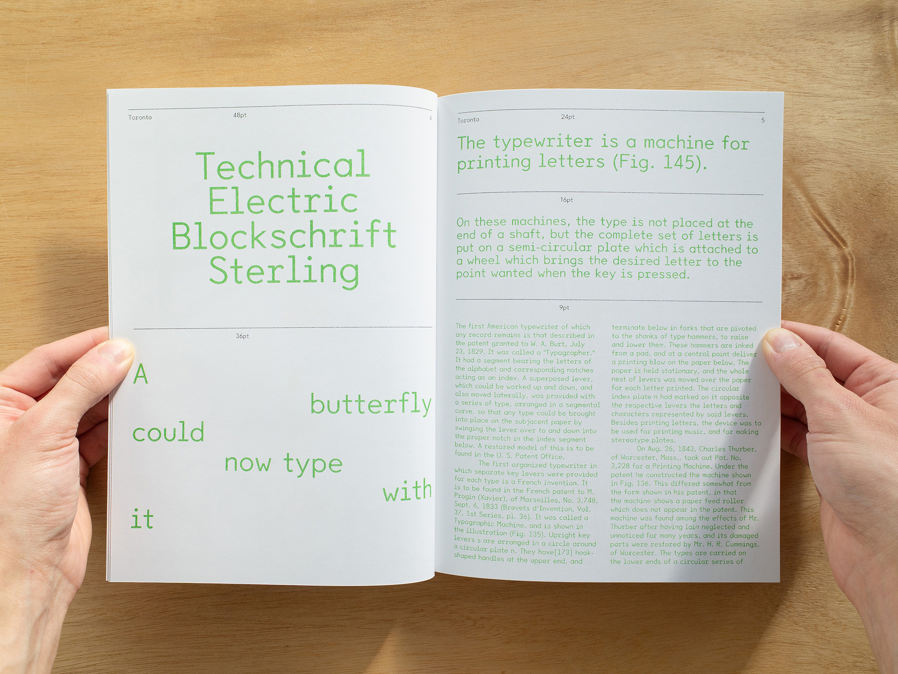
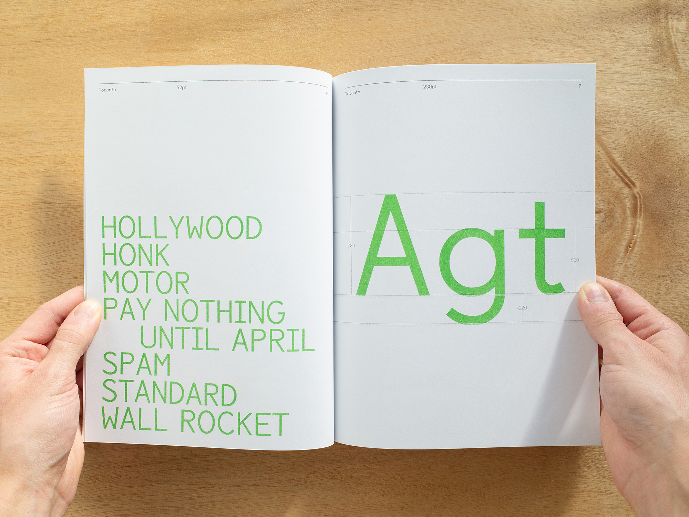
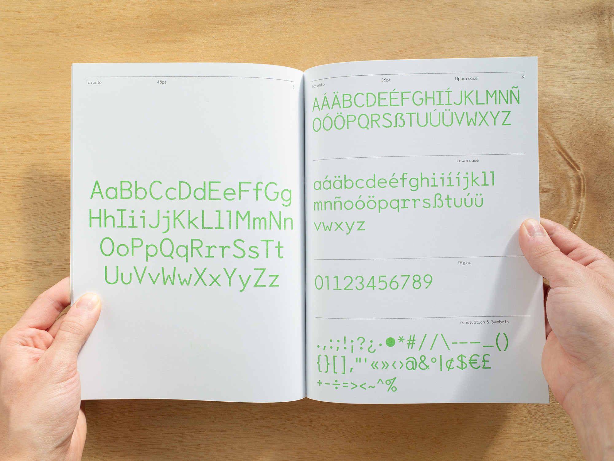
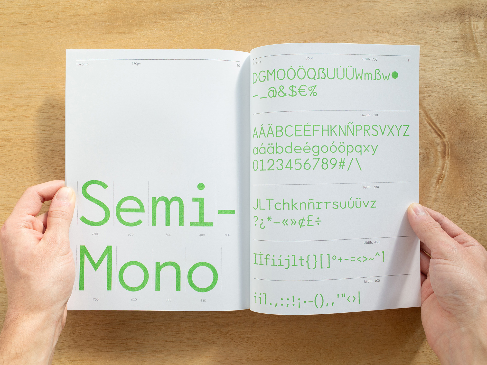
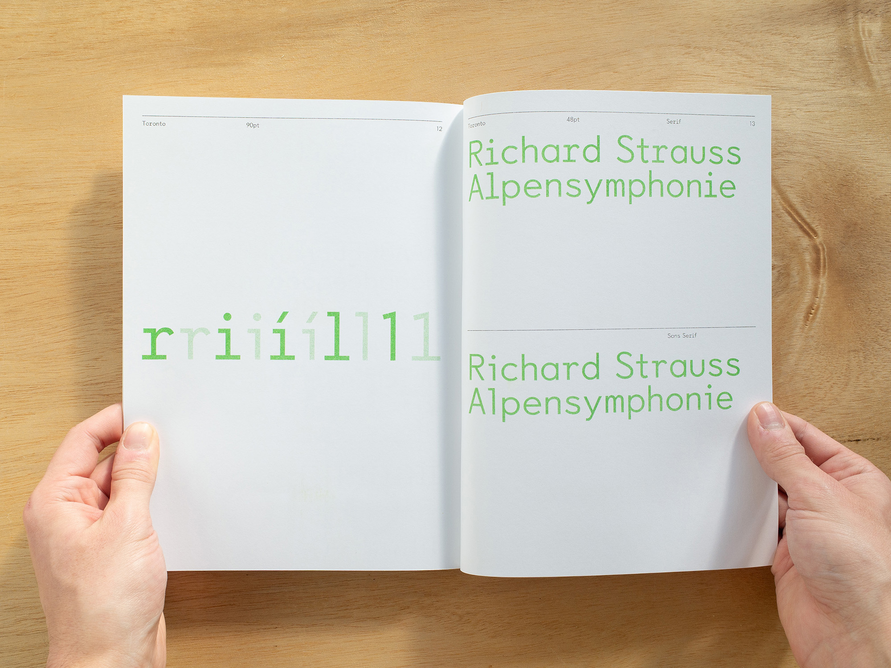
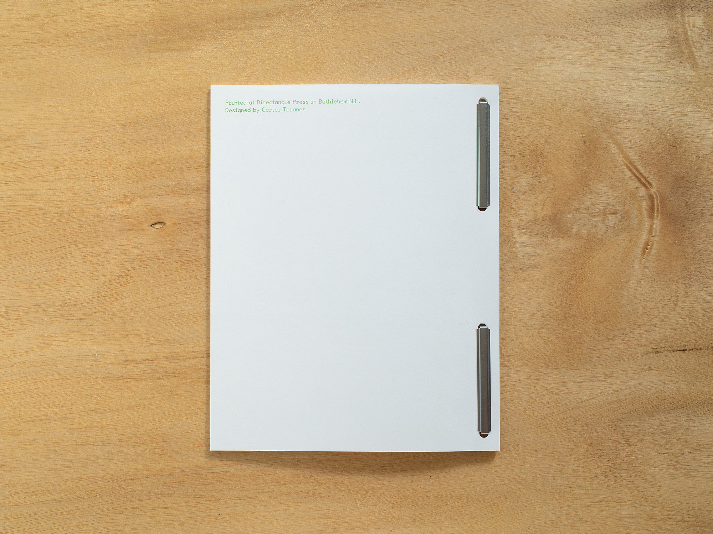
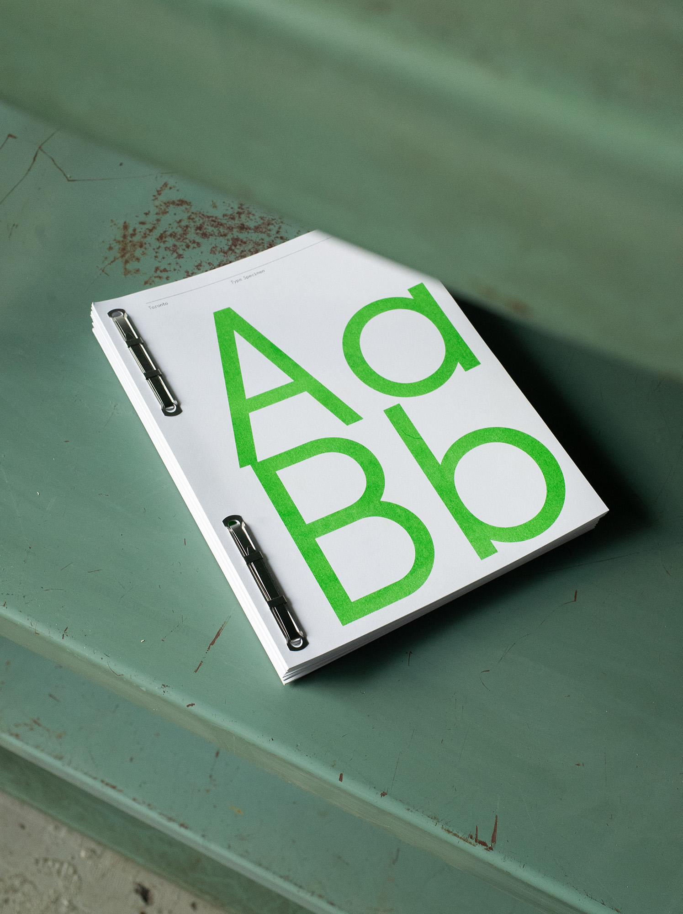
Toronto
Toronto is a semi-faithful, semi-mono revival of the Rarotype typewriter font originally known as “Ro 44 Toronto,” drawn with sharp terminals and an overall lighter weight. The sans-serif OpenType alternates were inspired by Thomas Wyse, a member of an antique typewriter collectors’ internet group who provided physical samples of the original Ro 44 Toronto. On his machine, the slugs for the letters “r,” “l,” and “i” had been filed down, creating a one-of-a-kind sans-serif version of the original. Toronto is free to use and modify.
Links
PDF Type Specimen
Download
Riso Colors
Kelly Green
Black
Paper
Lynx White 65lb Cover
Year
2025